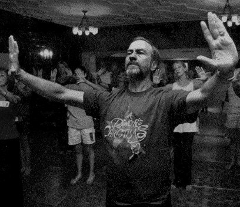

Tuesday, March the 9th, 2004
back to: title, date or indexes
Yesterday's quotation of the day, Wilma Salisbury's terrific description of a dance by Father Bob VerEecke, included a link to a page about the terpsichorean Jesuit. What was lacking, however, was a photograph of our hero in action. Here he is:

Not only that. Pansy Cradledew has unearthed a tremendous picture of Father Bob's workshop. She says: “Isn't it marvellous? Apart from his preposterous gestures, the startled way his students seem to be staring (or trying not to stare!) at him is priceless.” You'll find this treasure, next to a big caption saying “Dancing In The Spirit Of The Season”, at the Boston College Chronicle.